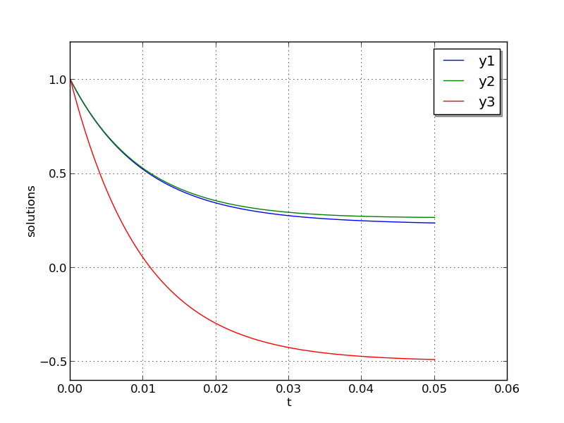
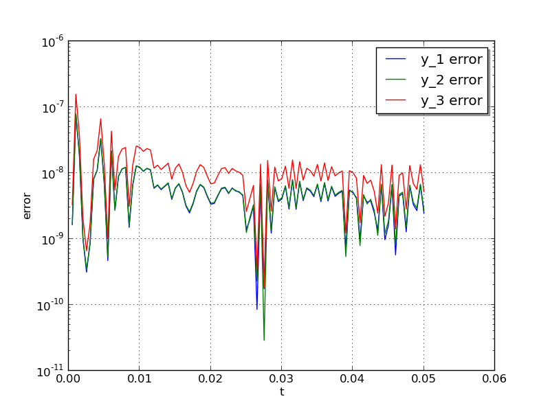

This example demonstrates the use of ARKode’s fully implicit solver on a stiff ODE system that has a simple analytical solution. The problem is that of a linear ODE system,
where \(A = V D V^{-1}\). In this example, we use
where \(\lambda\) is a large negative number. The analytical solution to this problem may be computed using the matrix exponential,
We evolve the problem for \(t\) in the interval \(\left[0,\, \frac{1}{20}\right]\), with initial condition \(Y(0) = \left[1,\, 1,\, 1\right]^T\).
The stiffness of the problem is directly proportional to the value of \(\lambda\). The value of \(\lambda\) should be negative to result in a well-posed ODE; for values with magnitude larger than 100 the problem becomes quite stiff.
Here, we choose \(\lambda = -100\), along with scalar relative and absolute tolerances of \(rtol=10^{-6}\) and \(atol=10^{-10}\), respectively.
This program solves the problem with the DIRK method, Newton iteration with the SUNMATRIX_DENSE matrix module and accompanying SUNLINSOL_DENSE linear solver module, ARKDLS direct linear solver interface, and a user-supplied dense Jacobian routine. Output is printed every 0.005 units of time (10 total). Run statistics (optional outputs) are printed at the end.
This problem is included both as a simple example to test systems of ODE within ARKode on a problem having an analytical solution, \(Y(t) = V e^{Dt} V^{-1} Y(0)\). As seen in the plots below, the computed solution tracks the analytical solution quite well (left), and results in errors with exactly the magnitude as specified by the requested error tolerances (right).
 {kind=link}
{kind=link}